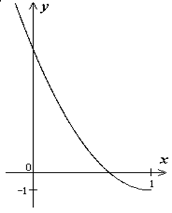

П 8.№7.
Установите, какую линию определяет уравнение
Нарисуйте ее график.
РЕШЕНИЕ:
Область допустимых значений  определяется
условиями
определяется
условиями
определяется
условиями  .
.Искомая кривая – часть параболы с вершиной в точке  .
.
.
Ответ: Часть параболы